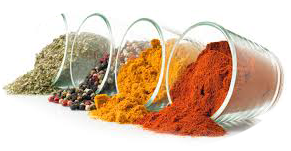

Spices
Spices:
.jpeg)
A spice is a dried seed, fruit, root, bark, or vegetable substance primarily used for flavoring, coloring
or preserving food. Sometimes a spice is used to hide other flavors.
Spices are distinguished from herbs, which are parts of leafy green plants used for flavoring or as a
garnish.
Many spices have antimicrobial properties. This may explain why spices are more commonly used in warmer
climates, which have more infectious disease, and why the use of spices is prominent in meat, which is
particularly susceptible to spoiling.
A spice may have other uses, including medicinal, religious ritual, cosmetics or perfume production, or
as a vegetable. For example, turmeric roots are consumed as a vegetable citation needed and garlic as an
antibiotic.
Form of Spice:

A spice may be available in several forms: fresh, whole dried, or pre-ground dried. Generally, spices
are dried.
A whole dried spice has the longest shelf life, so it can be purchased and stored in larger amounts,
making it cheaper on a per-serving basis.
Some spices are not always available either fresh or whole, for example turmeric, and often must be
purchased in ground form. Small seeds, such as fennel and mustard seeds, are often used both whole and
in powder form.
Some flavor elements in spices are soluble in water; many are soluble in oil or fat. As a general rule,
the flavors from a spice take time to infuse into the food so spices are added early in preparation.

Cinnamon
Cardamon

Cloves